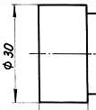

Kroglo kotiramo tako, da napišemo pred koto z znakom "fi" besedo "krogla". Èe je središèe krogle zunaj risbe, kotiramo kroglo s polmerom tako, da napišemo "krogla R" in podamo koto polmera.
| Slika 1 | Slika 2 |
Oznaèevanje teles okroglega prereza:
Znak "fi" pred kotirno številko pomeni, da je kotirni rob projekcija kroga.
|  |  |
| Slika 3 | Slika 4 |
Oznaèevanje teles kvadratnega prereza:
Znak "kvadrat" pred kotirno številko pomeni, da je kotirni rob projekcija kvadrata.
| Slika 5 | Slika 6 |
Oznaèevanje teles pravokotnega ali trapezastega prereza:
Dve diagonali, narisani s èrto B, pomenita, da je ploskev ravna in pravokotne ali trapezaste oblike.
1. Vprašanja za usmerjanje pozornosti in usvajanje novih besed:
1. Kaj kaže slika 1?
2. Kaj kaže slika 2?
3. Kaj kaže slika 3?
4. Kaj kaže slika 4?
5. Kaj kaže slika 5?
6. Kaj kaže slika 6?
2. Zapiši od ene do pet kljuènih besed, ki povzemajo vsebino te uène enote.
3. Vprašanja za razmislek, ponavljanje in povezovanje z lastno izkušnjo:
4. Domaèa naloga:
V enem do petih stavkih zapiši, kaj ti je v tej uèni enoti najbolj ostalo v spominu.